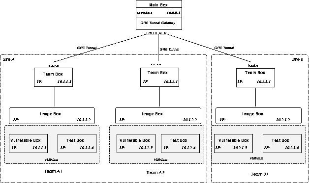

News
The competition has terminated. Check out the Final Score. 0ld Eur0pe won! Congratulations!
The event has been covered by the local news. ("Hackers fight it out at UCSB to win global bragging rights", Santa Barbara News Press, 10 December, 2005)
The event has also been covered by Heise, a german IT news site ("Europaische Teams bei internationalem Hacking-Wettbewerb vorne", 14 December, 2005)
Introduction
The UCSB International Capture The Flag (also known as the iCTF) is a distributed, wide-area security exercise, whose goal is to test the security skills of the participants from both the attack and defense viewpoints.
The Capture The Flag contest is a multi-site, multi-team hacking contest in which a number of teams compete independently against each other.
Each team is given a virtualized server installation (for example, a virtual Linux server). The server provides a number of services. The services have a number of undisclosed vulnerabilities, which have been included in the server's software by the contest organizers.
The goal of each team is to maintain the set of services available and uncompromised throughout the contest phase. Each team can (and should) attempt to compromise other teams' services. Since all the teams receive an identical copy of the virtual server, the task of each team is to find vulnerabilities in their copy of the server and possibly fix the vulnerabilities without disrupting the services. At the same time, the teams have to leverage their knowledge about the vulnerabilities they found to compromise the servers run by other teams. Compromising a service will allow a team to bypass the service security mechanisms and to "capture the flag" associated with a service.
During the contest a scoring system keeps track, for each team, of which services are available, and which services have been compromised.
The 2005 iCTF is scheduled Friday, December 9, 2005, from 8am to 4pm, PST (note: this was changed from the initial date of December 7th).
The winner of the last edition of the competition (which was held in June 2005) was the team "The Tower of Hanoi", from Politecnico di Milano, Italy.
History and Background
The UCSB CTF evolved from a number of previous security "live exercises" that were carried out locally at UCSB. The first wide-area edition of the UCSB CTF was carried out in December 2003. In that CTF, fourteen teams from around the United States competed in a contest to compromise other teams' network services while trying to protect their own services from attacks. The contest included teams from UCSB, North Carolina State University, the Naval Postgraduate School in Monterey, the West Point Academy, Georgia Tech, University of Texas at Austin, and University of Illinois, Urbana-Champaign.
In 2004 the UCSB CTF evolved into an international exercise, which included teams from the United States and Austria, Germany, Italy, and Norway. This was never be attempted before on such a large scale.
The exercise is loosely based on the DEFCON Capture the Flag contest. Acknowledgments go to the Ghetto Hackers that did such a wonderful (and inspiring) job in organizing the CTF contest at DEFCON and to Kenshoto, who picked up the task of running the CTF and found ways to improve it. Many of the ideas of our iCTF are derived from the DEFCON CTF and the lessons learned by participating to the DEFCON contest.
This exercise is different from the DEFCON contest because it involves several educational institutions spread across the different continents. The DEFCON contest includes locally connected teams only.
In addition, the DEFCON contest has always involved a limited number of teams. We developed a new network solution that allows a large number of teams to participate.
Finally, we use a novel technique to route traffic among the teams that allows for a more realistic experience.
A series of slides describing the CTF can found here.
Schedule
The iCTF is scheduled on Friday, December 9, 2005. The contest starts at 8am, PST, by distributing a VMware image of a system (Linux? *BSD? Windows?) that provides a number of services. The participating teams have two hours to set up their systems and their connections. During this phase no traffic between teams is allowed.
At 10am, PST the teams start to compete and they are able to attack each other. During this time, the scoring system will provide real-time information about the performance of the participants.
At 4pm, PST the competition ends and the winner is declared.
Participation
To participate to the iCTF a team has to be associated with an educational institution (e.g., a university or a school).
Each team has to provide the name of a faculty point-of-contact (POC), who is responsible for the ethical behavior of the team. In addition, each site has to provide the name of a deployment POC, who is responsible for the setup of the necessary infrastructure. If a site is competing with multiple teams, the faculty and deployment POCs can be shared.
The teams must to be composed of graduate and/or undergraduate students only (faculty and deployment POCs are allowed to compete, though). Teams should not be composed of more than 20 people (excluding the POCs). Since there is no real way to enforce this, it is the task of the faculty POC to make sure that the teams do not end up being too large.
No professionals from companies or non-educational institutions are allowed to participate.
If you want to participate, please send a message to the CTF organizer (Giovanni Vigna) with your affiliation, faculty POC, deployment POC, and number of teams. Please also provide a name for each team. After that, you will be assigned an IP range and you will provided with additional instructions to connect to the competition router.
Participant slots are limited, so it may be possible that soon no more participants will be included.
If you are already listed, please take the time to check that the names, affiliation, and email addresses associated with your site are correctly presented.
All the communication regarding the CTF will use the mailing list ctf-participants, accessible at http://lists.cs.ucsb.edu/mailman/listinfo/ctf-participants. If you are part of the competition and you are not listed as a member of the ctf-participants mailing list, please subscribe to the list. Mail messages to the organizers of the CTF should be sent to ctf-admin@lists.cs.ucsb.edu.
The list of current teams is available on the participants page.
Network setup
The Capture The Flag exercise involves a number of sites (e.g., UCSB, TU Vienna, Georgia Tech). Each site can have one or more independent teams.
Each site has a dedicated Class B, non-routeable set of addresses. Each team at each site has a dedicated class C subnetwork allocated within the address space of the site. For example, UCSB has the 10.1.x.x address space, and two UCSB teams have address spaces 10.1.1.x, 10.1.2.x, respectively.
Each team has a dedicated host, called the team box. Each team box is connected to a central host called the main box. This means that if a site (e.g., TU Vienna) has more than one team participating in the exercise, each team's team box will connect directly to the main box (this is somewhat different from previous editions of the CTF).
The connection between the team boxes and the main box is implemented through GRE tunneling. The team box must be assigned the 1 address within the allocated subnetwork address space. For example, if a team's subnetwork is 10.3.2.x, then the team box must have the 10.3.2.1 address. The address of the main box is 10.0.0.1.
Each team can have any number of hosts in their subnetwork. The only requirement, in addition to having a team box, is that a host, called, the image box is a part of the subnetwork. The image box should have Fedora Core 4 (FC4) and VMware Workstation 5 installed. The image box must be assigned the 2 address within the subnetwork address space. For example, if a team has the 10.4.3.x address space, it has to set the address of the image box to 10.4.3.2.
Each image box has two VMware instances running on it. Each instance represent a (virtual) host within the team's subnet. The first host is called the vulnerable box and it runs the image of the server with the vulnerable services. The second host is called the test box and will be used for the connectivity testing. The vulnerable box and the test box must have the 3 and 4 addresses, respectively. The figure below shows an example of the setup for three teams (A1, A2, and B1) from two sites (A and B).

The team boxes are configured so that all traffic out of each team subnetwork is sent to the main box. This is an important difference with respect to a standard configuration. In a "normal" set up, traffic exchanged between two subnetworks connected to the same site box would not be sent to the main box. In this setup, instead, the traffic must always be forwarded to the main box because the box is configured to collect statistics and keep track of the network usage. For example, suppose that the two hosts 10.1.1.4 and 10.1.2.4 in the figure above want to communicate. In a usual setup the traffic would have been routed through the team boxes only. In the CTF setup, the traffic is routed through the following path:
10.1.1.4 -> 10.1.1.1 (team box) ->10.0.0.1 (main box) -> 10.1.2.1 (team box) -> 10.1.2.4.
Note that the vulnerable box and the test box are the only hosts in a team's network that have to be reachable from other teams' networks. All the other hosts can be configured to block traffic coming from the outside.
The details about the required setup are contained in the iCTF HowTo.
In the very likely case that problems arise, do not
hesitate to contact the
CTF Network admin
with details about the issue. Useful details include the
output of ifconfig, netstat -rn,
and iptables -v -L, and your kernel .config.
Rules
It is not possible/feasible to list all the rules and the exceptions to rules that apply to the CTF competition. When deciding if an attack/protection technique is fair or not, try to think about the fact that the goal of this exercise in not to determine who is 1337 and who is l4m3r, but, instead, to learn about protecting/attacking a system in a live situation. Try not to focus on "breaking" the scoring system and instead concentrate on developing/deploying effective (and realistic) defense and attack techniques.
Below, you'll find the current list of rules. These may change as more issues are raised by the participants.
- It is forbidden to launch denial-of-service (DOS) attacks. This is particularly critical, given the limited duration of the exercise. Please no floods, no DNS poisoning, no obviously destructive behavior.
- Traffic generation will be penalized, regardless of the fact that the traffic is part of a DOS attack or not. Generating traffic from a host that a team has compromised to penalized the owner team is considered unfair practice. Please don't do it.
- It is possible to patch the services, provided that the patch does not break the scoring system. If the modification to the service makes the service not accessible, points will be lost.
- The scoring mechanism will access random pages at random times, in addition to checking for the flag values. Blocking access to the service functionality that is not associated with flag verification is equivalent to make the service not available.
- It is not possible to perform attacks outside the VPN. For example, attacking a site box using its routeable address is not allowed. All the traffic for the CTF must be contained within the VPN.
- It is permissible to attack any host of a team's subnetwork. The attacks are not necessarily limited to the OS image. For example, if you compromise the OS image of Team 1 you may try to compromise the host that is running the VMware application.
Scoring
Each team must maintain a number of services active and uncompromised.
At the beginning of a scoring period (say time t0), the scoring system connects to a service using a username and password (possibly creating an account on-the-fly) and stores a flag that is unique with respect to the team, the service, and this particular iteration of the scoring process. The flag is stored in a location that, in theory, is accessible only by using the username and password used by the scoring system.
After a certain period of time (say at time t1 = t0 + q) the scoring systems tries to log in again with the same username and password. At this point, if the login is not successful, the service is considered as malfunctioning and no defense point are assigned to the team that is running the service. If the scoring system can successfully log in and nobody proved that at time t, with t0 < t < t1, the flag has been stolen, then the team hosting the service gets a number of defense points.
A team (say A) might compromise the service of another team (say B). In practice this means that team A is able to read the flags stored by the scoring system on team B's server for a specific service (without having to know the username/password combination used by the scoring system). Team A can then submit the flag to a central flag certification system to prove that it was able to compromise B's server security.
If the flag is correct and "fresh" then, at the end of the scoring period, team A gets a number of attack points. More precisely, the team gets a percentage of the attack points that is proportional to the number of services that the attack team has currently up and running. This is done to penalize "selfish" behavior, where a team keeps its services down and concentrate on attacking only.
Note that if another team (say C) steals the same flag, then the points are divided between the teams. This means that services that are easy to compromise may give less points, while services that are more difficult to hack may guarantee higher returns.
The attack points for compromising a specific service will max out after a certain amount. This means that, after a while, submitting flags for a specific service is not going to give any points to the team. The flag submission page will return an appropriate message when this happens. This measure is to guarantee that the teams work on compromising multiple services.
Note that the scoring period q is different for each service. Services that are more difficult to compromise may be scored more often, which means that if a team compromises that service it may get points at a higher rate.
Now a little example to clarify. Suppose that the server implements a web-based discussion service where authenticated users can post messages. Users can post messages publicly or to a private discussion forum that requires a username and a password to access the forum contents.
The scorebot connects to the service of team B and creates a new forum, called "recipes" protected by a password, say "spaghetti". Then it generates the flag and creates a message in the forum that contains the flag (e.g., in the body of a posting to that forum). The flag looks like this: MTNzEwECA+hWjCb8t8/FgbEg/mSm1hbU231kjg==
After some time, the scoring system attempts to log into the forum (using forum name "recipes" and password "spaghetti") and checks if the flag is still there. If it is, then a new flag is created as the body of another posting. (note that the scoring system might also decide to create a complete different forum to store the new flag.)
In order to steal the flag team A has to connect to team B's server and in some way access the contents of the "recipes" forum. Of course team A does not know the password used to create the forum and therefore it has to find some way to bypass security. If successful team A will be able to read the flag. Then, team A will immediately submit the flag using a form on the scoring web site. The fact that team A stole the flag will be recorded and, at the end of the scoring period, some points will be granted to team A.
Point of contact
The Capture The Flag (CTF) is organized by Giovanni Vigna, at UCSB.
This is the contact information:
- Phone:+1 (805) 893-7565
- Fax:+1 (805) 893-8553
- E-Mail: vigna@cs.ucsb.edu
- Web: http://www.cs.ucsb.edu/~vigna
- Office: Engineering I, Room 2109
-
Address: University of California
Department of Computer Science CS-66
Santa Barbara, CA 93106-5110, USA -
PGP key:
-----BEGIN PGP PUBLIC KEY BLOCK----- Version: GnuPG v1.2.1 (GNU/Linux) mQGiBD7mK/MRBAC0LMdSYMw/V1yBa2uPYl6gmTt1ydk35CFM+LaiymvYJ9tcVNX5 +id4YkKeQzRigg7RCTbfgUjw23zXapUpIZgIK3RvXbMVsxdq1otQkZyRf/7VZSMl EVnlflNaqy7O3tjVbNCbEEl0GAGp5UwzYfTcix44mYYNdgHcvkbgq5GXFwCgzpsq CuNqq0+CyFGhI9S1R+aIya8D/0iNMYyU3M5YDhNyRs5Gtjebhc2eGExCR71QjRww qNyWTlr43nsP1A8ckPdeqjd1vrSp/F9eFAIcDUlZmyDYlmFUSYO2X17xZBNqgDAu jnrduuuuu4l3owqVILFIhgs8EwNNA0bVSxwgwFCQsGWuJr5cNXTggZVKdsqfRyR5 reh4A/9wJcXXOulUNpEbUmrDEMVeNvEdEdIh4nQdyxi1pcggAhc2WxiFu1NOSYsL daKLDB4kiP3xfdK7Cq+scvvx6NdKsSDWYibQ0uMfvYDzX3LMKpBBvKxDyD0pfJjg DLSe9cn7Tp03b7kTKFxRC0FhydT7ECr7cqw6vsNF3cBjaN1YSbQiR2lvdmFubmkg VmlnbmEgPHZpZ25hQGNzLnVjc2IuZWR1PohZBBMRAgAZBQI+5ivzBAsHAwIDFQID AxYCAQIeAQIXgAAKCRCrju5XfPpVYjO2AKDDsYft/N00g+v2511Laxpzv9Dp0ACd FTTMe4I3mCI6zW38v62OECHPR6i4zQQ+5iv0EAMAn8y7knVSp1raHNdGzwUC+i4h 4TBl5DBxzcBS591K28ef6+o1rBnSJBdP5370vGxvUNczRJwFXnRctoj9et3enraM mF0SxD+qadyFdukeFJr5cqdfMWTwwjh9efRsS3JnAAMFAv9KTUYTSUjTFrqjw8+H 4npDq6VVy7cXo/3hHLGXhO2DGu9x1RbglFyeSoMbq2ALjLhJJs1I1NemhySN8ZfO DdC9WITYKDasCcIj4b5dcgkxMg0XSwi7FRToVdyww2jIWKuIRgQYEQIABgUCPuYr 9AAKCRCrju5XfPpVYt3tAJ9LT1PibtwUEyZPNyrDFWsyvSwkDgCgqOOGkfYzZgQE JOLKi4o/eFOM5cs= =/UFb -----END PGP PUBLIC KEY BLOCK-----
Additional Contact Info
A number of students at UCSB are involved in helping setting up this exercise. You may want to contact them on particular issues or in case the main point of contact is not available.
- Marco Cova, (OS, VMware) marco@cs.ucsb.edu
- Vika Felmetsger, (Routing) rusvika@cs.ucsb.edu
- Greg Banks, (Scoring) nomed@cs.ucsb.edu